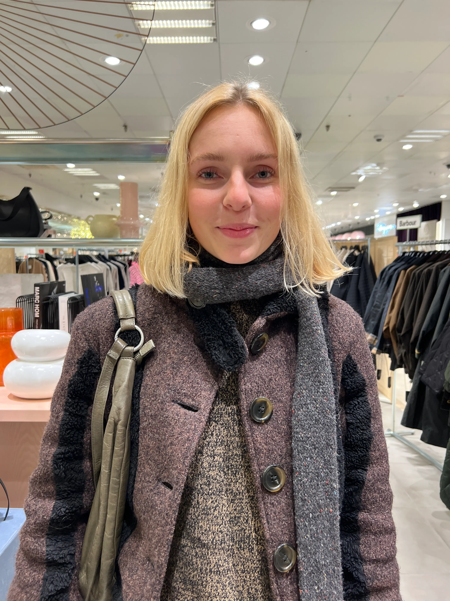
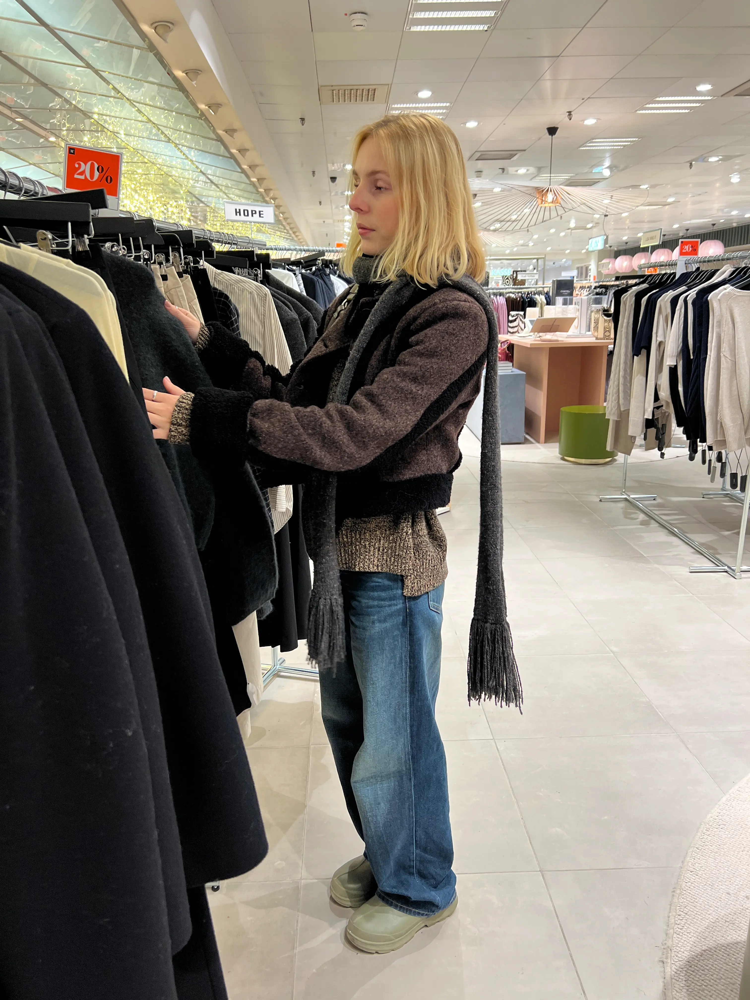
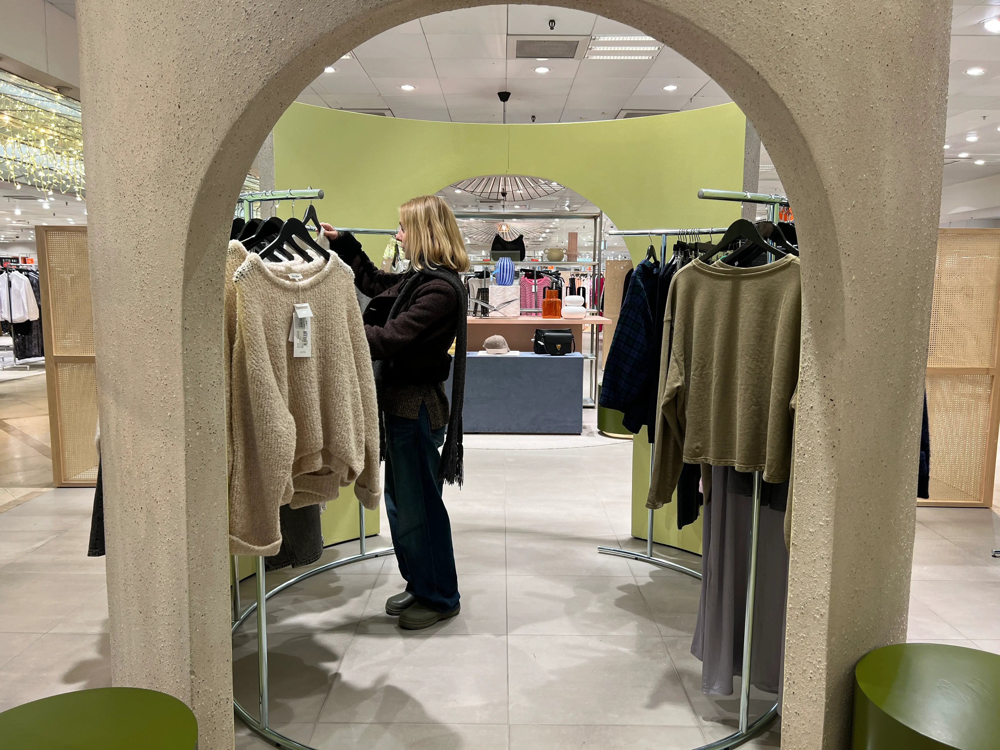
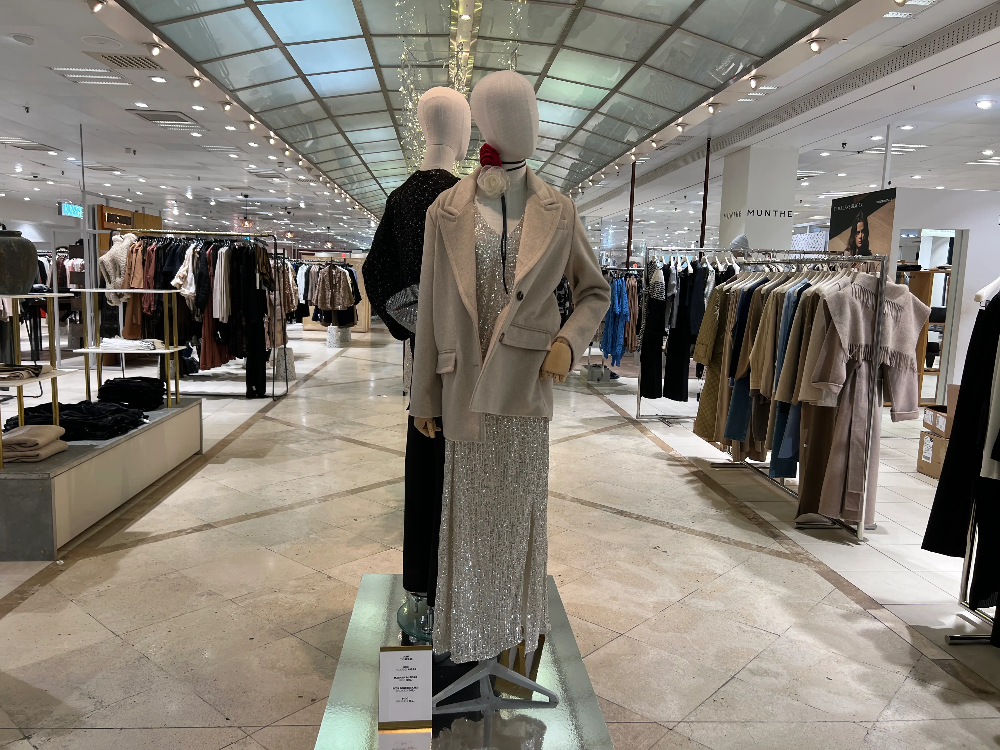
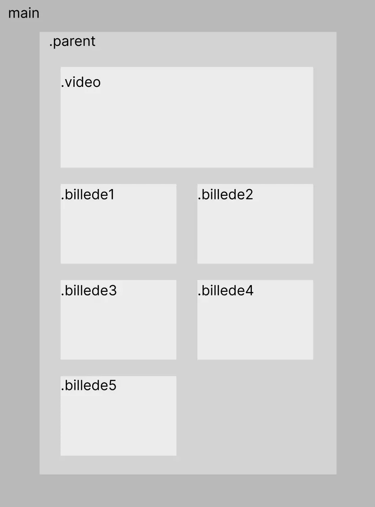

PASSION FOR FASHION
SOFIA DALSGAARD
Træd ind i modeuniverset med Sofia Dalsgaard i denne hjertevarme interviewvideo, hvor hun deler indblik i sin passion for mode. Fra den spirende interesse til inspirerende forbindelser og livsændrende øjeblikke, udforsker vi hendes rejse. Opdag, hvordan hendes lidenskab skaber nye venskaber og åbner døre til kreativitet, samtidig med at hun deler råd til, hvordan andre kan vække deres egen modeentusiasme. En fortælling om hendes egen historie, tanker om bæredygtighed, kvalitet, stil og venskaber.
Medvirkende: Sofia Dalsgaard




LAYOUTDIAGRAM
